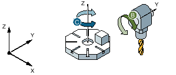

Maschinenkinematik mit Schwenkkopf und Schwenktisch.
Schwenkkopf mit Rundachse 1 (B) dreht um die Maschinenachse Y.
Winkelbereich Rundachse B von -90 bis +90 Grad.
Schwenktisch mit Rundachse 2 (C) dreht um die Maschinenachse Z.
Winkelbereich Rundachse 2 (C) von 0 bis 360 Grad (Modulo 360).
Maschinenhersteller hat in der IBN Schwenken den Richtungsbezug auf Rundachse 1 (B) eingestellt.
Im Schwenkzyklus wird eine Drehung um X (WKS) von 10 Grad programmiert.
Grundstellung (Polstellung) der Kinematik (B = 0 Grad, C = 0 Grad)
Rundachse B fährt in positiver Richtung auf +10 Grad.
Rundachse C fährt auf 270 Grad.
Rundachse B fährt in negativer Richtung auf -10 Grad.
Rundachse C fährt auf 90 Grad (Drehung um X).
Mit beiden Einstellungen der Richtung, "Minus" oder "Plus", kann ein Werkstück mit geschwenkten Ebenen bearbeitet werden. Die beiden von der NC berechneten Lösungen unterscheiden sich um 180 Grad (siehe Rundachse C).
Siehe auch:
Beispiel 2 - CYCLE800